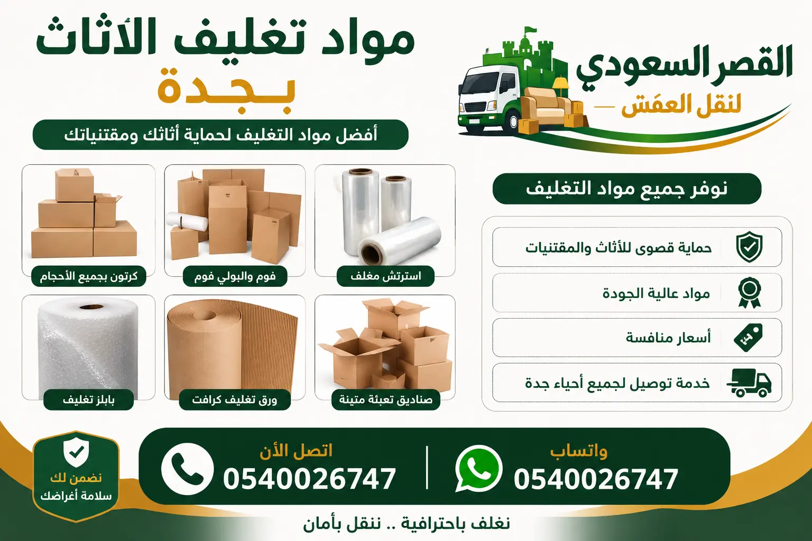

الكلمات المفتاحية:
أفضل مواد تغليف الأثاث بجدة: دليل شامل لحماية عفشك
عند التفكير في نقل العفش في جدة، تأتي عملية التغليف كأهم خطوة لضمان سلامة الأثاث. مواد تغليف الأثاث بجدة تختلف في أنواعها واستخداماتها، واختيار المواد المناسبة يحمي أثاثك من الخدوش والكسر والغبار والرطوبة. في هذا الدليل الشامل من شركة القصر السعودي، سنستعرض أفضل مواد تغليف العفش المتوفرة في جدة، وكيفية استخدام كل منها، والأسعار التقريبية، لمساعدتك في اختيار ما يناسب احتياجاتك.
قبل البدء في عملية نقل العفش، من الضروري فهم أن كل قطعة أثاث تحتاج إلى نوع معين من التغليف. الأجهزة الإلكترونية تحتاج إلى فقاعات هوائية مضادة للكهرباء الساكنة، بينما الأثاث الخشبي يحتاج إلى كراتين مقواة وزوايا حماية. تغليف العفش في جدة هو فن يتقنه فريقنا المحترف، ونحن نشارككم خبراتنا في هذا الدليل.
هل تحتاج مساعدة في تغليف عفشك؟
اتصل الآن لحجز خدمة التغليف
١. الفقاعات الهوائية (Bubble Wrap): الحماية المثالية للأجهزة الحساسة
تعتبر الفقاعات الهوائية من أفضل مواد تغليف الأثاث بجدة لحماية الأجهزة الإلكترونية والزجاج والمرايا والتحف. تتوفر بأحجام فقاعات مختلفة (صغيرة، متوسطة، كبيرة) وتختلف سماكتها حسب درجة الحماية المطلوبة. نقل الأجهزة الكهربائية يتطلب استخدام فقاعات هوائية عالية الجودة لحماية الدوائر الإلكترونية الحساسة من الصدمات.
أنواع الفقاعات الهوائية المتوفرة في جدة تشمل: الفقاعات الصغيرة (قطر 6 مم) للأجهزة الصغيرة، الفقاعات المتوسطة (قطر 10 مم) للأجهزة المتوسطة، والفقاعات الكبيرة (قطر 25 مم) للأثاث الثقيل. كما تتوفر فقاعات مضادة للكهرباء الساكنة (Anti-Static) لحماية المكونات الإلكترونية الحساسة. سيارات نقل العفش في جدة المجهزة تستخدم هذه المواد بشكل أساسي.
نصائح استخدام الفقاعات الهوائية:
- لف الأجهزة الإلكترونية بطبقتين من الفقاعات
- استخدام شريط لاصق عالي الجودة لتثبيت الفقاعات
- تغليف الزوايا أولاً ثم الأجزاء المسطحة
٢. الكراتين المقواة (Heavy-Duty Cartons): الأساس في تغليف الأثاث
الكراتين المقواة هي العمود الفقري لعمليات نقل العفش بين المدن وداخل جدة. تتوفر بأحجام مختلفة تناسب جميع الأغراض من الملابس إلى الأجهزة. مواد تغليف العفش تشمل الكراتين ذات الطبقة الواحدة للأغراض الخفيفة، والكراتين المزدوجة الطبقة للأثاث الثقيل، والكراتين الثلاثية الطبقة للقطع القيمة.
في شركات نقل العفش في جدة، نستخدم كراتين بأحجام قياسية: صغير (40×30×30 سم) للكتب والأغراض الصغيرة، متوسط (50×40×40 سم) للأجهزة المتوسطة، كبير (60×50×50 سم) للملابس والبطانيات، عملاق (80×60×60 سم) للأغراض الخفيفة الحجم. أفضل شركة نقل عفش في جدة تختار الكراتين المناسبة لكل غرض.
٣. الصناديق الخشبية (Wooden Crates): الحماية القصوى للأثاث القيم
للأثاث القيم والتحف واللوحات الفنية، نستخدم الصناديق الخشبية المصنوعة حسب الطلب. هذه الصناديق توفر أعلى مستوى من الحماية خاصة عند نقل العفش لمسافات طويلة أو عند استخدام دينا نقل عفش. الصناديق الخشبية مصنوعة من خشب الصنوبر أو البلوط المقاوم للصدمات والرطوبة.
نقل العفش في الفلل غالباً ما يتضمن قطعاً فاخرة تحتاج إلى صناديق خشبية. تتضمن الصناديق طبقات داخلية من الفقاعات الهوائية والإسفنج، ومقابض جانبية لسهولة الحمل، ونظام تهوية لمنع تراكم الرطوبة. شركات نقل العفش شمال جدة المتخصصة تستخدم هذه الصناديق للأثاث الفاخر.
٤. الأغطية البلاستيكية الشفافة (Stretch Wrap): حماية من الغبار والرطوبة
الأغطية البلاستيكية الشفافة تستخدم لحماية الأثاث من الغبار والرطوبة والخدوش السطحية. تتوفر بسماكات مختلفة (12-23 ميكرون) وعروض مختلفة (10-50 سم). تغليف وتخزين العفش بجدة يعتمد بشكل كبير على هذه المادة.
تستخدم الأغطية البلاستيكية لتغليف المراتب والكنب والأثاث المنجد لحمايتها من الأتربة. كما تستخدم كطبقة خارجية فوق الفقاعات الهوائية للتثبيت. مستودعات تخزين العفش في جدة تشترط تغليف الأثاث بهذه المادة قبل التخزين لضمان النظافة.
مميزات الأغطية البلاستيكية:
- مقاومة للماء والرطوبة بنسبة 100%
- تحمي من الغبار والحشرات
- مرنة وتلتف حول أي شكل
- لا تترك بقايا لاصقة على الأثاث
٥. حمايات الزوايا (Corner Protectors): حماية الأطراف الحساسة
حمايات الزوايا هي قطع بلاستيكية أو كرتونية أو مطاطية توضع على زوايا الأثاث لحمايتها من الكسر أو التلف. فك وتركيب الأثاث في جدة يتطلب استخدام حمايات الزوايا خاصة للأثاث الزجاجي والرخامي.
تتوفر حمايات الزوايا بأشكال مختلفة: مثلثة الشكل للزوايا الحادة، L-shaped للحواف، و E-shaped للأبواب. كيفية نقل الأثاث الثقيل بدون تلف تعتمد بشكل كبير على استخدام حمايات الزوايا المناسبة لكل قطعة.
أسعار مواد تغليف الأثاث في جدة (تقديرية 2026)
| نوع المادة | المواصفات | السعر التقريبي | الاستخدام المناسب |
|---|---|---|---|
| فقاعات هوائية صغيرة | لفة 50 متر × 30 سم، 6 مم | 45 - 70 ريال | أجهزة صغيرة، كؤوس |
| فقاعات هوائية كبيرة | لفة 30 متر × 50 سم، 25 مم | 90 - 140 ريال | شاشات، مرايا، تحف |
| كرتون طبقة واحدة | مقاس 50×40×40 سم، 10 قطع | 35 - 55 ريال | أغراض خفيفة، كتب |
| كرتون طبقتين | مقاس 60×50×50 سم، 10 قطع | 60 - 90 ريال | أجهزة، ملابس |
| كرتون ثلاث طبقات | مقاس 80×60×60 سم، 5 قطع | 80 - 120 ريال | أثاث ثقيل، قطع قيمة |
| صندوق خشبي | حسب المقاس (يصنع حسب الطلب) | 150 - 400 ريال | تحف، لوحات، أثاث فاخر |
| غطاء بلاستيك شد | لفة 300 متر × 50 سم | 40 - 65 ريال | مراتب، كنب، تغليف خارجي |
| حماية زوايا بلاستيك | علبة 50 قطعة | 25 - 40 ريال | زوايا الأثاث الخشبي |
| شريط لاصق بني | لفة 100 متر × 5 سم | 8 - 15 ريال | تثبيت جميع أنواع التغليف |
| شريط لاصق شفاف | لفة 66 متر × 5 سم | 10 - 18 ريال | تغليف الأجهزة والشاشات |
* الأسعار تقريبية وقد تختلف حسب المورد والكمية والموسم. شركة القصر السعودي توفر مواد تغليف عالية الجودة ضمن خدماتها.
مقارنة شاملة بين أفضل مواد تغليف الأثاث بجدة
| الميزة | فقاعات هوائية | كراتين مقواة | صناديق خشبية | أغطية بلاستيك | حماية زوايا |
|---|---|---|---|---|---|
| مقاومة الصدمات | ⭐⭐⭐⭐⭐ | ⭐⭐⭐⭐ | ⭐⭐⭐⭐⭐ | ⭐⭐ | ⭐⭐⭐⭐ |
| مقاومة الرطوبة | ⭐⭐⭐ | ⭐⭐ | ⭐⭐⭐⭐ | ⭐⭐⭐⭐⭐ | ⭐⭐⭐ |
| مقاومة الغبار | ⭐⭐⭐ | ⭐⭐⭐ | ⭐⭐⭐⭐ | ⭐⭐⭐⭐⭐ | ⭐⭐ |
| سهولة الاستخدام | ⭐⭐⭐⭐⭐ | ⭐⭐⭐⭐ | ⭐⭐⭐ | ⭐⭐⭐⭐⭐ | ⭐⭐⭐⭐⭐ |
| سعر التكلفة | منخفض | منخفض | مرتفع | منخفض | منخفض جداً |
| إعادة الاستخدام | لا | نعم (محدود) | نعم (عدة مرات) | لا | نعم |
| المناسب لـ | أجهزة، زجاج | جميع الأغراض | أثاث قيم | تغليف خارجي | زوايا الأثاث |
⭐ خلاصة المقارنة:
لأفضل حماية شاملة، يوصى باستخدام مزيج من هذه المواد: الفقاعات الهوائية للأجهزة الحساسة + الكراتين المقواة للتجميع + حماية الزوايا للأطراف + الغطاء البلاستيكي كطبقة خارجية. اختيار شركة نقل العفش المناسبة يضمن استخدام المواد المثالية.
الأحياء والمدن التي نخدمها في جدة والمملكة
نقدم خدمات نقل الفلل والشقق والمكاتب وخدمات نقل المكاتب في جدة باستخدام أفضل مواد تغليف الأثاث في جميع هذه المناطق:
📍 نغطي جميع أحياء جدة ونقدم خدمات نقل العفش بين جدة والرياض وجميع مدن المملكة.
الأسئلة الشائعة عن مواد تغليف الأثاث بجدة
مقالات ذات صلة
هل تبحث عن أفضل مواد تغليف الأثاث بجدة؟
نحن في شركة القصر السعودي نستخدم أفضل المواد ونقدم خدمة تغليف احترافية لعملائنا